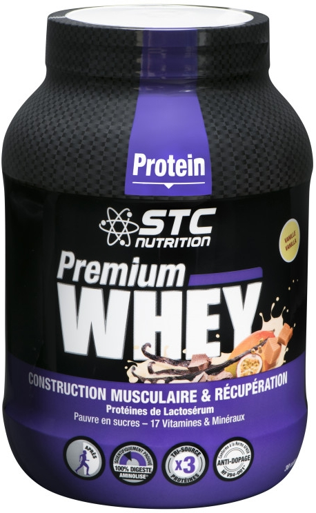
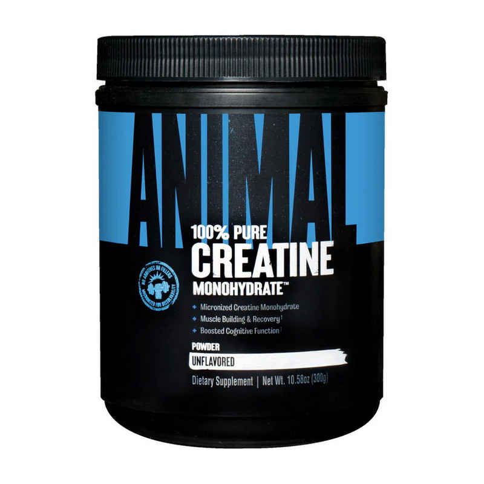
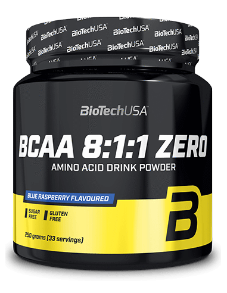
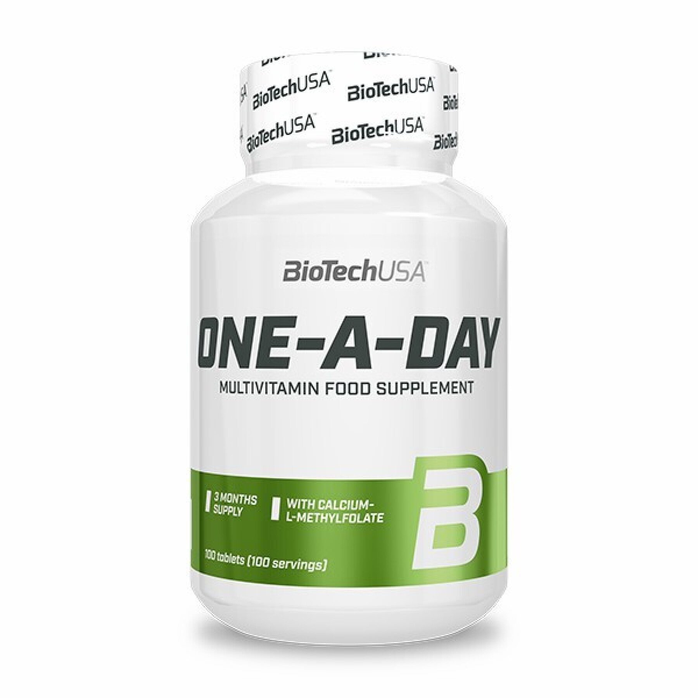

<section class="popular-categories">
  <h2 class="popular-categories__title">Популярні категорії</h2>

  <div class="popular-categories__slider">
    <button class="popular-categories__arrow popular-categories__arrow--prev" aria-label="Попередня категорія">
      <svg xmlns="http://www.w3.org/2000/svg" width="24" height="24" viewBox="0 0 32 32" fill="currentColor">
        <path d="M23.505 0c0.271 0 0.549 0.107 0.757 0.316 0.417 0.417 0.417 1.098 0 1.515l-14.258 14.264 14.050 14.050c0.417 0.417 0.417 1.098 0 1.515s-1.098 0.417-1.515 0l-14.807-14.807c-0.417-0.417-0.417-1.098 0-1.515l15.015-15.022c0.208-0.208 0.486-0.316 0.757-0.316z" />
      </svg>
    </button>

    <div class="popular-categories__list">
      <article class="popular-categories__item">
        <a href="#" class="popular-categories__link">
          
          <h3 class="popular-categories__name">Протеїн</h3>
        </a>
      </article>

      <article class="popular-categories__item">
        <a href="#" class="popular-categories__link">
          
          <h3 class="popular-categories__name">Креатин</h3>
        </a>
      </article>

      <article class="popular-categories__item">
        <a href="#" class="popular-categories__link">
          
          <h3 class="popular-categories__name">Амінокислоти</h3>
        </a>
      </article>

      <article class="popular-categories__item">
        <a href="#" class="popular-categories__link">
          
          <h3 class="popular-categories__name">Вітаміни</h3>
        </a>
      </article>
    </div>

    <button class="popular-categories__arrow popular-categories__arrow--next" aria-label="Наступна категорія">
      <svg xmlns="http://www.w3.org/2000/svg" width="24" height="24" viewBox="0 0 32 32" fill="currentColor">
        <path d="M8.489 31.975c-0.271 0-0.549-0.107-0.757-0.316-0.417-0.417-0.417-1.098 0-1.515l14.258-14.264-14.050-14.050c-0.417-0.417-0.417-1.098 0-1.515s1.098-0.417 1.515 0l14.807 14.807c0.417 0.417 0.417 1.098 0 1.515l-15.015 15.022c-0.208 0.208-0.486 0.316-0.757 0.316z" />
      </svg>
    </button>
  </div>
</section>
